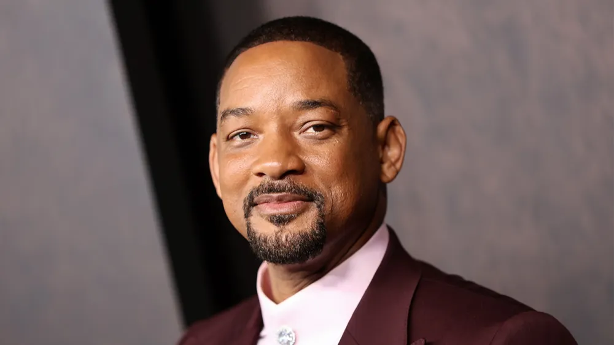
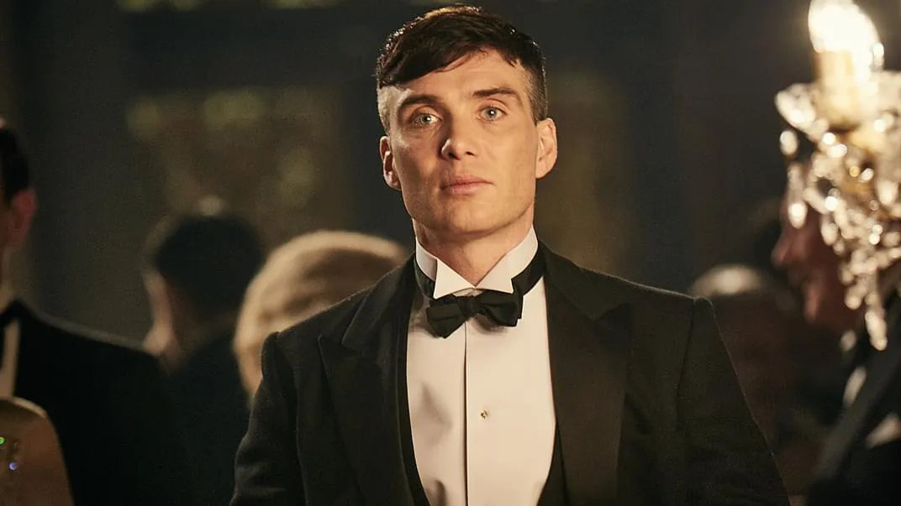
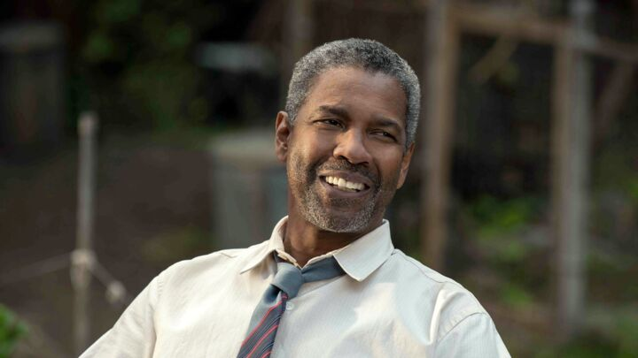
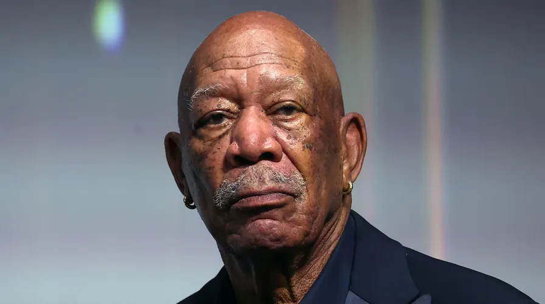

Omar Sy est un acteur, producteur de cinéma, réalisateur, scénariste
et humoriste français, né le 20 janvier 1978 à Trappes (Yvelines).
Il accède à la notoriété en formant, avec Fred Testot, le duo
comique Omar et Fred. En 2011, il tient aux côtés de François Cluzet
la vedette du film Intouchables, qui, avec 19,44 millions de
spectateurs, est au premier rang du box-office français en 2011 et
le troisième plus gros succès du cinéma français. En 2012, il reçoit
le César du meilleur acteur pour sa prestation dans ce film d’Éric
Toledano et Olivier Nakache. Ce succès lui ouvre notamment les
portes d'Hollywood et il tourne dès lors dans plusieurs blockbusters
du cinéma américain (X-Men, Jurassic World et Inferno). Il est
également la vedette de la série Lupin diffusée sur Netflix.
Biographie Jeunesse et famille Omar Sy naît le 20 janvier 1978 à
Trappes, dans les Yvelines. Quatrième d'une fratrie de huit
enfants1, il est le fils d'un ouvrier sénégalais et d'une femme de
ménage mauritanienne2,3. Originaires du village de Bakel à la
frontière sénégalo-mauritanienne4, ses deux parents sont d'ethnie
peule et sa langue maternelle est le pulaar5. Son père, issu d'une
famille de tisserands, émigre en France en 1962 dans le but d'y
accumuler un petit pécule afin de pouvoir ouvrir une boutique dans
son pays natal4. Il reste finalement en France, où il travaille dans
l'usinage de pièces automobiles puis dans la logistique chez un
sous-traitant automobile4. Son épouse le rejoint en 19744. La
famille est installée à Trappes4 dans les Yvelines où, pendant son
enfance, Omar côtoie Jamel Debbouze, de trois ans son aîné. Jamel
habite le même quartier (Les Merisiers) et est un ami de son frère
aîné4,6.

Will Smith
Willard Smith, dit Will Smith est un acteur, rappeur, chanteur,
scénariste et producteur de cinéma américain, né le 25 septembre
1968 à Philadelphie2 en Pennsylvanie. Il est l'un des rares artistes
à avoir connu le succès dans trois différents médias de
divertissement aux États-Unis et dans le monde : cinéma, télévision
et musique. Il est devenu rapidement célèbre en tenant le rôle-titre
de la série télévisée Le Prince de Bel-Air au début des années 1990,
puis en s'imposant au cinéma avec quelques blockbusters à succès
comme Bad Boys (1995), Independence Day (1996), Men in Black (1997)
puis Ennemi d'État (1998). À la suite du mauvais succès de Wild Wild
West (1999) [réf. souhaitée], il accepte de tourner dans deux suites
: Men in Black 2 (2002) et Bad Boys 2 (2003), mais s'essaie
également à un cinéma plus dramatique : le mélodrame La Légende de
Bagger Vance (2001) de Robert Redford puis Ali (2001) de Michael
Mann, qui lui vaut une nomination à l'Oscar du meilleur acteur en
2002. Il privilégie ensuite des projets plus commerciaux : la
comédie Hitch, expert en séduction (2005), les blockbusters de
science-fiction I, Robot (2004), Je suis une légende (2007) et
Hancock (2008). Il porte aussi deux mélodrames réalisés par Gabriele
Muccino : À la recherche du bonheur (2006), qui lui vaut sa seconde
nomination à l'Oscar du meilleur acteur, puis Sept vies (2008). Il
est alors l'un des acteurs les mieux payés d'Hollywood avec 80
millions de dollars gagnés entre le 1er juin 2007 et le 1er juin
20083,4 et le seul acteur à avoir tourné dans huit films classés
premiers au box-office américain dès leur premier week-end de
diffusion5. Les années 2010 sont cependant plus difficiles : après
le succès Men in Black 3 (2012), ses nouveaux blockbusters : After
Earth (2013), Un amour d'hiver (2014), Diversion (2015), Suicide
Squad (2016) et Bright (2017) - comme ses projets plus intimistes -
Seul contre tous (2015) et Beauté cachée (2016) - sont très mal
reçus par la critique6. En 2019, Aladdin, l’adaptation en prise de
vues réelle du film homonyme de 1992, dans lequel il incarne le
Génie, devient le plus gros succès au box-office de sa carrière7. En
2020, il reprend son rôle dans Bad Boys for Life et en 2024 dans Bad
Boys: Ride or Die. En 2022, il reçoit de nombreuses récompenses pour
son interprétation de Richard Williams dans le film La Méthode
Williams, dont l'Oscar du meilleur acteur.
Tupac Shakur
Tupac Shakur né Tupac Amaru Shakur le 16 juin 1971 à New York, connu
sous les noms de scène de 2Pac et Makaveli (en forme longue Makaveli
The Don Killuminati)2, et mort assassiné le 13 septembre 1996 à Las
Vegas, est un rappeur, chanteur, poète et acteur afro-américain3. Il
est considéré comme l'un des plus grands rappeurs de tous les
temps4,5. Fils d’Afeni Shakur, militante afro-américaine, Tupac est
issu d'une famille ayant milité dans les rangs des Black Panthers.
Depuis ses débuts, Tupac Shakur compte plus de 75 millions d'albums
vendus dans le monde6. Le magazine Rolling Stone lui attribue la 86e
place de son classement des plus grands artistes musicaux de tous
les temps7. Parallèlement à sa carrière musicale, il était un acteur
prometteur8 et un citoyen socialement engagé. La plupart des
chansons de Tupac parlent d'une enfance issue de la violence et de
la misère dans les ghettos, du racisme, des problèmes de société et
des conflits avec d'autres rappeurs. Il a milité tout au long de sa
carrière pour l'égalitarisme racial9. Tupac Shakur fut d'abord un
roadie et un danseur pour le groupe de hip-hop alternatif Digital
Underground10,11,12. Il a ensuite fait partie des groupes Outlawz,
Digital Underground et Thug Life. Son succès contribue largement à
l'explosion commerciale mondiale du rap au cours des années 1990.
Son charisme, son flow, ses paroles travaillées et sa mort
prématurée en font l'une des icônes majeures de ce genre musical :
il est l'un des artistes comptant le plus d'albums après sa mort13,
et est classé 8e célébrité morte rapportant le plus d'argent en
2007, devançant notamment James Brown et Bob Marley6. Tupac sort son
premier album, 2Pacalypse Now, en 1991, qui fait de lui un acteur
majeur du rap West Coast durant les années 199014. Il réalise au
cours de sa carrière plusieurs albums à succès comme Strictly 4 My
N.I.G.G.A.Z. en 1993 et Me Against the World en 199515. Cette même
année, Tupac Shakur, qui a connu entre-temps des problèmes
juridiques, un vol qualifié et une fusillade, entre en rivalité avec
les rappeurs de la côte est et notamment son ancien ami : The
Notorious B.I.G.16. Son album All Eyez on Me, premier album double
de l'histoire du hip-hop pour un artiste solo, devient l'un des
albums les plus vendus aux États-Unis. Parmi ses nombreux problèmes
juridiques, Tupac est accusé d'avoir commis des abus sexuels dont il
nie les faits car aucune preuve concrète n'est apportée, il dira
avoir été piégé. Il aura également connu d'autres problèmes
juridiques. Le 30 novembre 1994, il se fait tirer dessus à cinq
reprises et se fait voler dans le hall d'un studio d'enregistrement
à New York. Tupac Shakur soupçonne alors que d'autres figures de
l'industrie du rap avaient une connaissance préalable de l'incident
et ne l'ont pas averti. Cette controverse a contribué à déclencher
la rivalité East Coast/West Coast. Il est ensuite déclaré coupable
d'attouchements sexuels envers une fan et condamné à une peine
d'emprisonnement17. Après avoir purgé onze mois de sa peine, il est
libéré sous caution payée par Marion « Suge » Knight, le PDG du
label Death Row Records. En échange de l'aide de Suge, Shakur
accepte d'enregistrer deux albums pour le label Death Row. Le 7
septembre 1996, Tupac Shakur est à nouveau la cible de tirs, mais
cette fois fatals, lors d'une fusillade au volant à Las Vegas. Après
avoir été conduit à un hôpital de la ville, il meurt d'une
insuffisance respiratoire et d'un arrêt cardiaque le 13 septembre
199618. Sa vie, son succès, ses problèmes avec la justice et son
assassinat au sommet de sa gloire contribuent à son statut de poète
de la rue, mystérieux et mélancolique, et font de Tupac une icône
culturelle. De nombreuses controverses et complots entourent
d'ailleurs sa mort, près de trente ans après les faits19. En 2023 il
reçoit son étoile sur le Hollywood Walk of Fame20.

Cillian Murphy
Cillian Murphy né le 25 mai 1976 à Douglas (Irlande), est un acteur
et musicien irlandais. Il a commencé sa carrière en tant que
musicien de rock. Il a ensuite joué d'abord au théâtre puis dans des
courts métrages et des films indépendants à la fin des années 1990.
Il se fait connaître dans plusieurs films tels que 28 Jours plus
tard (2002), Retour à Cold Mountain (2003), Intermission (2003), Red
Eye : Sous haute pression (2005) et Breakfast on Pluto (2005), pour
lesquels il est nommé pour le Golden Globe du meilleur acteur dans
un film musical ou une comédie en 2006. Il interprète Jonathan Crane
/ l'Épouvantail dans la trilogie Dark Knight de Christopher Nolan
(2005-2012). Au milieu des années 2000, il joue notamment dans Le
vent se lève (2006), Sunshine (2007), The Edge of Love (2008),
Inception (2010) et Le Secret de Peacock (2010). En 2011, il
remporte un Irish Times Theatre Award du meilleur acteur et un Drama
Desk Award pour une performance solo exceptionnelle dans Misterman
[archive]. Il est également devenu parrain du Centre de recherche
sur l'enfance et la famille de l'UNESCO à l'université nationale
d'Irlande à Galway. Il est étroitement associé aux travaux du
professeur Pat Dolan, directeur de l'UCFRC et de la Chaire UNESCO
sur les enfants, les jeunes et l'engagement civique1. Au début des
années 2010, il apparaît dans les films In Time (2011), Retreat
(2011) et Red Lights (2012). De 2013 à 2022, il incarne Thomas «
Tommy » Shelby, le chef de file dans la série Peaky Blinders, pour
laquelle il remporte deux Prix du cinéma et de la télévision
irlandais du meilleur acteur - Drame, en 2017 et 2018. Il joue aussi
dans les films Transcendance (2014), Au cœur de l'océan (2015),
Opération Anthropoid (2016), Dunkerque (2017), The Delinquent Season
(en) (2018), Anna (2019) et Sans un bruit 2 (2020). En 2023, il
incarne le rôle-titre dans le biopic Oppenheimer réalisé par
Christopher Nolan, et remporte le Golden Globe du meilleur acteur
dans un film dramatique, British Academy Film Award du meilleur
acteur et l'Oscar du meilleur acteur pour sa performance. En 2020,
le Irish Times le classe 12e des meilleurs acteurs irlandais2.

Denzel Washington
Denzel Washington 1 est un acteur, réalisateur et producteur de
cinéma américain né le 28 décembre 1954 à Mount Vernon (État de New
York). Il est l’un des membres les plus emblématiques de la
génération des acteurs afro-américains masculins – avec Eddie
Murphy, Morgan Freeman, Samuel L. Jackson, Wesley Snipes, Forest
Whitaker, Laurence Fishburne, Will Smith, Martin Lawrence ou Jamie
Foxx – à être parvenu à se faire une place dans le cinéma
hollywoodien à la fin du XXe siècle. Marchant dans les pas de Sidney
Poitier, il s’est engagé contre le racisme anti-noir dans ses films,
notamment dans Malcolm X réalisé par son ami Spike Lee, dans
Hurricane Carter ou dans Le Plus Beau des combats. Il s’est engagé
aussi dans d’autres luttes pour la justice et la tolérance à l’égard
des minorités, les homosexuels par exemple dans Philadelphia de
Jonathan Demme. Mais il a également joué dans des films d'autres
registres, des thrillers en particulier, notamment à cinq reprises
sous la direction de Tony Scott (USS Alabama, Man on fire, etc.) et
plusieurs fois sous la direction d'Antoine Fuqua (Training Day,
Equalizer, etc.). Il a remporté deux Oscars, celui du Meilleur
acteur pour son rôle de policier véreux dans Training Day – Il est
le deuxième Afro-Américain, après Sidney Poitier, à avoir obtenu
cette récompense – et celui du Meilleur acteur dans un second rôle
pour Glory. Il a aussi été nommé à huit reprises aux Golden Globes
et récompensé deux fois. Il a reçu de nombreux autres prix,
notamment un Tony Awards, 16 Images Awards et un Cecil B. DeMille
Award pour l'ensemble de sa carrière en 2016.

Morgan Freeman
Morgan Freeman prononcé en anglais : né le 1er juin 1937 à Memphis
(Tennessee), est un acteur, réalisateur et producteur de cinéma
américain. Considéré comme l’un des plus grands acteurs de sa
génération, il commence sa carrière théâtrale et cinématographique
en 1964. Il étudie les arts du théâtre à Los Angeles et apparaît
dans des productions théâtrales. En 1978, il obtient la
reconnaissance et est nommé pour le Tony Award du meilleur acteur
dans une pièce de théâtre pour son rôle de Zeke dans la pièce de
Richard Wesley The Mighty Gents. Parallèlement, Morgan Freeman joue
essentiellement des seconds rôles au cinéma ; le drame Le Prêteur
sur gages (1964) est son premier film. Il gagne une première
nomination aux Oscars du cinéma pour La Rue en 1987, dans la
catégorie du meilleur acteur dans un second rôle, puis acquiert une
large reconnaissance internationale grâce à Miss Daisy et son
chauffeur (1989) et Les Évadés (1994), deux films qui lui valent
chacun une nomination à l'Oscar du meilleur acteur. Freeman reçoit
l'Oscar du meilleur acteur dans un second rôle pour Million Dollar
Baby en 2004, ainsi qu'une nouvelle nomination à l'Oscar du meilleur
acteur en 2009, pour Invictus. Il prend part au fil de sa carrière à
de nombreuses grosses productions à succès, notamment Glory (1989),
Robin des Bois, prince des voleurs (1991), Seven (1995), Deep Impact
(1998), La Somme de toutes les peurs (2002), Red (2010) et
Insaisissables (2013). Il participe également à la trilogie The Dark
Knight de Christopher Nolan et dont les films sortent en 2005, 2008
et 2012, dans laquelle il interprète Lucius Fox. Le long-métrage
Bopha ! (1993), avec Danny Glover et Malcolm McDowell à la
distribution, marque les débuts de Freeman à la réalisation. Il est
aujourd'hui l'un des acteurs les plus populaires de sa génération,
apparaissant dans des films qui rapportent un total de plus de 4,5
milliards de dollars au box-office mondial. La voix grave de Freeman
est considérée comme distinctive, emblématique et reconnaissable. Il
est ainsi souvent choisi pour la narration dans les films et les
documentaires.